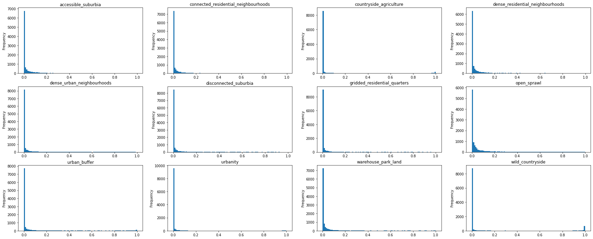

import os
import numpy
import tensorflow as tf
import json
import pandas
from tensorflow import keras
from tensorflow.keras import layers
from tensorflow.keras.applications.efficientnet import preprocess_input, decode_predictions
from tools_keras import *
numpy.random.seed(42)
chips = numpy.load('../../chips_gb/multilabel_chip_64.npy')
chips.shape
(94960, 64, 64, 3)
sorter = numpy.random.choice(numpy.arange(0, len(chips)), len(chips))
chips = chips[sorter]
target = pandas.read_parquet("../../chips_gb/chip_proportions_64.pq").drop(columns="geometry").iloc[sorter]
target = target.drop(columns=["9_3", "9_6", "9_7", "9_8"])
group_mapping = [
['9_0', '9_1', '9_2', '9_4', '9_5'],
['2_0'],
['2_1'],
['2_2'],
['1_0'],
['3_0'],
['5_0'],
['6_0'],
['8_0'],
['0_0'],
['4_0'],
['7_0']
]
group_naming = [
"Urbanity",
"Dense residential neighbourhoods",
"Connected residential neighbourhoods",
"Dense urban neighbourhoods",
"Accessible suburbia",
"Open sprawl",
"Warehouse_Park land",
"Gridded residential quarters",
"Disconnected suburbia",
"Countryside agriculture",
"Wild countryside",
"Urban buffer"
]
cd2nm = {}
for codes, name in zip(group_mapping, group_naming):
for code in codes:
cd2nm[f'{code}'] = name.lower().replace(" ", "_").replace("/", "_")
cd2nm = pandas.Series(cd2nm)
target = target.rename(columns=cd2nm).groupby(level=0, axis=1).sum()
mask = target.sum(axis=1) > 0.5
target_no_water = target[mask]
chips = chips[mask]
batch_size = 32
split1 = int(chips.shape[0] * 0.7)
split2 = int(chips.shape[0] * 0.85)
train_dataset = tf.data.Dataset.from_tensor_slices((chips[:split1], target_no_water.values[:split1]))
test_dataset = tf.data.Dataset.from_tensor_slices((chips[split1:split2], target_no_water.values[split1:split2]))
secret_dataset = tf.data.Dataset.from_tensor_slices((chips[split2:], target_no_water.values[split2:]))
train_dataset = train_dataset.batch(batch_size=batch_size)
test_dataset = test_dataset.batch(batch_size=batch_size)
secret_dataset = secret_dataset.batch(batch_size=batch_size)
preprocessing_and_augmentation = keras.Sequential(
[
layers.Resizing(224, 224, crop_to_aspect_ratio=True),
]
)
base_model = keras.applications.EfficientNetB4(
weights="imagenet", # Load weights pre-trained on ImageNet.
input_shape=(224, 224, 3),
include_top=False, # Do not include the ImageNet classifier at the top.
)
# Freeze the base_model
base_model.trainable = False
# Create new model on top
inputs = keras.Input(shape=(64, 64, 3))
x = preprocessing_and_augmentation(inputs)
x = preprocess_input(x)
# The base model contains batchnorm layers. We want to keep them in inference mode
# when we unfreeze the base model for fine-tuning, so we make sure that the
# base_model is running in inference mode here.
x = base_model(x, training=False)
x = layers.GlobalAveragePooling2D()(x)
x = layers.Dense(128, activation='relu')(x)
predictions = layers.Dense(12, activation="sigmoid")(x)
model = keras.Model(inputs, predictions)
model.summary()
Model: "model_3"
_________________________________________________________________
Layer (type) Output Shape Param #
=================================================================
input_8 (InputLayer) [(None, 64, 64, 3)] 0
sequential (Sequential) (None, 224, 224, 3) 0
efficientnetb4 (Functional) (None, 7, 7, 1792) 17673823
global_average_pooling2d_3 (None, 1792) 0
(GlobalAveragePooling2D)
dense_6 (Dense) (None, 128) 229504
dense_7 (Dense) (None, 12) 1548
=================================================================
Total params: 17,904,875
Trainable params: 231,052
Non-trainable params: 17,673,823
_________________________________________________________________
model.compile(
optimizer="adam",
loss="mse",
metrics=["mean_squared_error", "accuracy"],
)
target.sum().plot.bar()
<AxesSubplot:>
weights = target.sum().max() / target.sum()
class_weights = {k:w for k, w in enumerate(weights.values)}
specs = {
"folder": "../../urbangrammar_samba/spatial_signatures/ai/gb_64_multiclass/"
}
model_folder = specs['folder'] + "model"
log_folder = specs['folder'] + "logs"
pred_folder = specs['folder'] + "pred"
json_folder = specs['folder'] + "json"
callbacks = [
EarlyStopping(monitor="val_accuracy", patience=5, min_delta=0.02, verbose=True),
ModelCheckpoint(
filepath=f"{model_folder}/{model.name}_best",
monitor="val_accuracy",
save_best_only=True,
mode="max",
),
TensorBoard(log_dir=os.path.join(log_folder, model.name), histogram_freq=1)
]
t0 = time.time()
epochs = 200
history = model.fit(train_dataset, epochs=epochs, validation_data=test_dataset, class_weight=class_weights, callbacks=callbacks,)
t1 = time.time()
specs["runtime"] = t1 - t0
Epoch 1/200
1613/1613 [==============================] - ETA: 0s - loss: 0.0597 - mean_squared_error: 0.0381 - accuracy: 0.3986INFO:tensorflow:Assets written to: ../../urbangrammar_samba/spatial_signatures/ai/gb_64_multiclass/model/model_3_best/assets
/usr/local/lib/python3.8/dist-packages/keras/engine/functional.py:1410: CustomMaskWarning: Custom mask layers require a config and must override get_config. When loading, the custom mask layer must be passed to the custom_objects argument. layer_config = serialize_layer_fn(layer) /usr/local/lib/python3.8/dist-packages/keras/saving/saved_model/layer_serialization.py:112: CustomMaskWarning: Custom mask layers require a config and must override get_config. When loading, the custom mask layer must be passed to the custom_objects argument. return generic_utils.serialize_keras_object(obj)
1613/1613 [==============================] - 274s 164ms/step - loss: 0.0597 - mean_squared_error: 0.0381 - accuracy: 0.3986 - val_loss: 0.0356 - val_mean_squared_error: 0.0356 - val_accuracy: 0.4326
Epoch 2/200
1613/1613 [==============================] - ETA: 0s - loss: 0.0502 - mean_squared_error: 0.0331 - accuracy: 0.4858INFO:tensorflow:Assets written to: ../../urbangrammar_samba/spatial_signatures/ai/gb_64_multiclass/model/model_3_best/assets
/usr/local/lib/python3.8/dist-packages/keras/engine/functional.py:1410: CustomMaskWarning: Custom mask layers require a config and must override get_config. When loading, the custom mask layer must be passed to the custom_objects argument. layer_config = serialize_layer_fn(layer) /usr/local/lib/python3.8/dist-packages/keras/saving/saved_model/layer_serialization.py:112: CustomMaskWarning: Custom mask layers require a config and must override get_config. When loading, the custom mask layer must be passed to the custom_objects argument. return generic_utils.serialize_keras_object(obj)
1613/1613 [==============================] - 264s 164ms/step - loss: 0.0502 - mean_squared_error: 0.0331 - accuracy: 0.4858 - val_loss: 0.0335 - val_mean_squared_error: 0.0335 - val_accuracy: 0.4709
Epoch 3/200
1613/1613 [==============================] - ETA: 0s - loss: 0.0446 - mean_squared_error: 0.0302 - accuracy: 0.5423INFO:tensorflow:Assets written to: ../../urbangrammar_samba/spatial_signatures/ai/gb_64_multiclass/model/model_3_best/assets
/usr/local/lib/python3.8/dist-packages/keras/engine/functional.py:1410: CustomMaskWarning: Custom mask layers require a config and must override get_config. When loading, the custom mask layer must be passed to the custom_objects argument. layer_config = serialize_layer_fn(layer) /usr/local/lib/python3.8/dist-packages/keras/saving/saved_model/layer_serialization.py:112: CustomMaskWarning: Custom mask layers require a config and must override get_config. When loading, the custom mask layer must be passed to the custom_objects argument. return generic_utils.serialize_keras_object(obj)
1613/1613 [==============================] - 263s 163ms/step - loss: 0.0446 - mean_squared_error: 0.0302 - accuracy: 0.5423 - val_loss: 0.0311 - val_mean_squared_error: 0.0311 - val_accuracy: 0.5307
Epoch 4/200
1613/1613 [==============================] - ETA: 0s - loss: 0.0399 - mean_squared_error: 0.0275 - accuracy: 0.5937INFO:tensorflow:Assets written to: ../../urbangrammar_samba/spatial_signatures/ai/gb_64_multiclass/model/model_3_best/assets
/usr/local/lib/python3.8/dist-packages/keras/engine/functional.py:1410: CustomMaskWarning: Custom mask layers require a config and must override get_config. When loading, the custom mask layer must be passed to the custom_objects argument. layer_config = serialize_layer_fn(layer) /usr/local/lib/python3.8/dist-packages/keras/saving/saved_model/layer_serialization.py:112: CustomMaskWarning: Custom mask layers require a config and must override get_config. When loading, the custom mask layer must be passed to the custom_objects argument. return generic_utils.serialize_keras_object(obj)
1613/1613 [==============================] - 265s 164ms/step - loss: 0.0399 - mean_squared_error: 0.0275 - accuracy: 0.5937 - val_loss: 0.0296 - val_mean_squared_error: 0.0296 - val_accuracy: 0.5622
Epoch 5/200
1613/1613 [==============================] - ETA: 0s - loss: 0.0359 - mean_squared_error: 0.0251 - accuracy: 0.6355INFO:tensorflow:Assets written to: ../../urbangrammar_samba/spatial_signatures/ai/gb_64_multiclass/model/model_3_best/assets
/usr/local/lib/python3.8/dist-packages/keras/engine/functional.py:1410: CustomMaskWarning: Custom mask layers require a config and must override get_config. When loading, the custom mask layer must be passed to the custom_objects argument. layer_config = serialize_layer_fn(layer) /usr/local/lib/python3.8/dist-packages/keras/saving/saved_model/layer_serialization.py:112: CustomMaskWarning: Custom mask layers require a config and must override get_config. When loading, the custom mask layer must be passed to the custom_objects argument. return generic_utils.serialize_keras_object(obj)
1613/1613 [==============================] - 266s 165ms/step - loss: 0.0359 - mean_squared_error: 0.0251 - accuracy: 0.6355 - val_loss: 0.0282 - val_mean_squared_error: 0.0282 - val_accuracy: 0.5921
Epoch 6/200
1613/1613 [==============================] - ETA: 0s - loss: 0.0326 - mean_squared_error: 0.0230 - accuracy: 0.6742INFO:tensorflow:Assets written to: ../../urbangrammar_samba/spatial_signatures/ai/gb_64_multiclass/model/model_3_best/assets
/usr/local/lib/python3.8/dist-packages/keras/engine/functional.py:1410: CustomMaskWarning: Custom mask layers require a config and must override get_config. When loading, the custom mask layer must be passed to the custom_objects argument. layer_config = serialize_layer_fn(layer) /usr/local/lib/python3.8/dist-packages/keras/saving/saved_model/layer_serialization.py:112: CustomMaskWarning: Custom mask layers require a config and must override get_config. When loading, the custom mask layer must be passed to the custom_objects argument. return generic_utils.serialize_keras_object(obj)
1613/1613 [==============================] - 265s 164ms/step - loss: 0.0326 - mean_squared_error: 0.0230 - accuracy: 0.6742 - val_loss: 0.0273 - val_mean_squared_error: 0.0273 - val_accuracy: 0.6127
Epoch 7/200
1613/1613 [==============================] - ETA: 0s - loss: 0.0298 - mean_squared_error: 0.0211 - accuracy: 0.7029INFO:tensorflow:Assets written to: ../../urbangrammar_samba/spatial_signatures/ai/gb_64_multiclass/model/model_3_best/assets
/usr/local/lib/python3.8/dist-packages/keras/engine/functional.py:1410: CustomMaskWarning: Custom mask layers require a config and must override get_config. When loading, the custom mask layer must be passed to the custom_objects argument. layer_config = serialize_layer_fn(layer) /usr/local/lib/python3.8/dist-packages/keras/saving/saved_model/layer_serialization.py:112: CustomMaskWarning: Custom mask layers require a config and must override get_config. When loading, the custom mask layer must be passed to the custom_objects argument. return generic_utils.serialize_keras_object(obj)
1613/1613 [==============================] - 264s 164ms/step - loss: 0.0298 - mean_squared_error: 0.0211 - accuracy: 0.7029 - val_loss: 0.0259 - val_mean_squared_error: 0.0259 - val_accuracy: 0.6359
Epoch 8/200
1613/1613 [==============================] - ETA: 0s - loss: 0.0273 - mean_squared_error: 0.0195 - accuracy: 0.7277INFO:tensorflow:Assets written to: ../../urbangrammar_samba/spatial_signatures/ai/gb_64_multiclass/model/model_3_best/assets
/usr/local/lib/python3.8/dist-packages/keras/engine/functional.py:1410: CustomMaskWarning: Custom mask layers require a config and must override get_config. When loading, the custom mask layer must be passed to the custom_objects argument. layer_config = serialize_layer_fn(layer) /usr/local/lib/python3.8/dist-packages/keras/saving/saved_model/layer_serialization.py:112: CustomMaskWarning: Custom mask layers require a config and must override get_config. When loading, the custom mask layer must be passed to the custom_objects argument. return generic_utils.serialize_keras_object(obj)
1613/1613 [==============================] - 266s 165ms/step - loss: 0.0273 - mean_squared_error: 0.0195 - accuracy: 0.7277 - val_loss: 0.0251 - val_mean_squared_error: 0.0251 - val_accuracy: 0.6533
Epoch 9/200
1613/1613 [==============================] - ETA: 0s - loss: 0.0253 - mean_squared_error: 0.0181 - accuracy: 0.7479INFO:tensorflow:Assets written to: ../../urbangrammar_samba/spatial_signatures/ai/gb_64_multiclass/model/model_3_best/assets
/usr/local/lib/python3.8/dist-packages/keras/engine/functional.py:1410: CustomMaskWarning: Custom mask layers require a config and must override get_config. When loading, the custom mask layer must be passed to the custom_objects argument. layer_config = serialize_layer_fn(layer) /usr/local/lib/python3.8/dist-packages/keras/saving/saved_model/layer_serialization.py:112: CustomMaskWarning: Custom mask layers require a config and must override get_config. When loading, the custom mask layer must be passed to the custom_objects argument. return generic_utils.serialize_keras_object(obj)
1613/1613 [==============================] - 265s 164ms/step - loss: 0.0253 - mean_squared_error: 0.0181 - accuracy: 0.7479 - val_loss: 0.0243 - val_mean_squared_error: 0.0243 - val_accuracy: 0.6666
Epoch 10/200
1613/1613 [==============================] - ETA: 0s - loss: 0.0236 - mean_squared_error: 0.0168 - accuracy: 0.7651INFO:tensorflow:Assets written to: ../../urbangrammar_samba/spatial_signatures/ai/gb_64_multiclass/model/model_3_best/assets
/usr/local/lib/python3.8/dist-packages/keras/engine/functional.py:1410: CustomMaskWarning: Custom mask layers require a config and must override get_config. When loading, the custom mask layer must be passed to the custom_objects argument. layer_config = serialize_layer_fn(layer) /usr/local/lib/python3.8/dist-packages/keras/saving/saved_model/layer_serialization.py:112: CustomMaskWarning: Custom mask layers require a config and must override get_config. When loading, the custom mask layer must be passed to the custom_objects argument. return generic_utils.serialize_keras_object(obj)
1613/1613 [==============================] - 267s 165ms/step - loss: 0.0236 - mean_squared_error: 0.0168 - accuracy: 0.7651 - val_loss: 0.0238 - val_mean_squared_error: 0.0238 - val_accuracy: 0.6792
Epoch 11/200
1613/1613 [==============================] - ETA: 0s - loss: 0.0221 - mean_squared_error: 0.0157 - accuracy: 0.7790INFO:tensorflow:Assets written to: ../../urbangrammar_samba/spatial_signatures/ai/gb_64_multiclass/model/model_3_best/assets
/usr/local/lib/python3.8/dist-packages/keras/engine/functional.py:1410: CustomMaskWarning: Custom mask layers require a config and must override get_config. When loading, the custom mask layer must be passed to the custom_objects argument. layer_config = serialize_layer_fn(layer) /usr/local/lib/python3.8/dist-packages/keras/saving/saved_model/layer_serialization.py:112: CustomMaskWarning: Custom mask layers require a config and must override get_config. When loading, the custom mask layer must be passed to the custom_objects argument. return generic_utils.serialize_keras_object(obj)
1613/1613 [==============================] - 266s 165ms/step - loss: 0.0221 - mean_squared_error: 0.0157 - accuracy: 0.7790 - val_loss: 0.0234 - val_mean_squared_error: 0.0234 - val_accuracy: 0.6883
Epoch 12/200
1613/1613 [==============================] - ETA: 0s - loss: 0.0208 - mean_squared_error: 0.0148 - accuracy: 0.7933INFO:tensorflow:Assets written to: ../../urbangrammar_samba/spatial_signatures/ai/gb_64_multiclass/model/model_3_best/assets
/usr/local/lib/python3.8/dist-packages/keras/engine/functional.py:1410: CustomMaskWarning: Custom mask layers require a config and must override get_config. When loading, the custom mask layer must be passed to the custom_objects argument. layer_config = serialize_layer_fn(layer) /usr/local/lib/python3.8/dist-packages/keras/saving/saved_model/layer_serialization.py:112: CustomMaskWarning: Custom mask layers require a config and must override get_config. When loading, the custom mask layer must be passed to the custom_objects argument. return generic_utils.serialize_keras_object(obj)
1613/1613 [==============================] - 265s 164ms/step - loss: 0.0208 - mean_squared_error: 0.0148 - accuracy: 0.7933 - val_loss: 0.0230 - val_mean_squared_error: 0.0230 - val_accuracy: 0.6941
Epoch 13/200
1613/1613 [==============================] - ETA: 0s - loss: 0.0196 - mean_squared_error: 0.0139 - accuracy: 0.8047INFO:tensorflow:Assets written to: ../../urbangrammar_samba/spatial_signatures/ai/gb_64_multiclass/model/model_3_best/assets
/usr/local/lib/python3.8/dist-packages/keras/engine/functional.py:1410: CustomMaskWarning: Custom mask layers require a config and must override get_config. When loading, the custom mask layer must be passed to the custom_objects argument. layer_config = serialize_layer_fn(layer) /usr/local/lib/python3.8/dist-packages/keras/saving/saved_model/layer_serialization.py:112: CustomMaskWarning: Custom mask layers require a config and must override get_config. When loading, the custom mask layer must be passed to the custom_objects argument. return generic_utils.serialize_keras_object(obj)
1613/1613 [==============================] - 266s 165ms/step - loss: 0.0196 - mean_squared_error: 0.0139 - accuracy: 0.8047 - val_loss: 0.0226 - val_mean_squared_error: 0.0226 - val_accuracy: 0.7053
Epoch 14/200
1613/1613 [==============================] - ETA: 0s - loss: 0.0186 - mean_squared_error: 0.0132 - accuracy: 0.8143INFO:tensorflow:Assets written to: ../../urbangrammar_samba/spatial_signatures/ai/gb_64_multiclass/model/model_3_best/assets
/usr/local/lib/python3.8/dist-packages/keras/engine/functional.py:1410: CustomMaskWarning: Custom mask layers require a config and must override get_config. When loading, the custom mask layer must be passed to the custom_objects argument. layer_config = serialize_layer_fn(layer) /usr/local/lib/python3.8/dist-packages/keras/saving/saved_model/layer_serialization.py:112: CustomMaskWarning: Custom mask layers require a config and must override get_config. When loading, the custom mask layer must be passed to the custom_objects argument. return generic_utils.serialize_keras_object(obj)
1613/1613 [==============================] - 265s 165ms/step - loss: 0.0186 - mean_squared_error: 0.0132 - accuracy: 0.8143 - val_loss: 0.0226 - val_mean_squared_error: 0.0226 - val_accuracy: 0.7105
Epoch 15/200
1613/1613 [==============================] - ETA: 0s - loss: 0.0177 - mean_squared_error: 0.0125 - accuracy: 0.8218INFO:tensorflow:Assets written to: ../../urbangrammar_samba/spatial_signatures/ai/gb_64_multiclass/model/model_3_best/assets
/usr/local/lib/python3.8/dist-packages/keras/engine/functional.py:1410: CustomMaskWarning: Custom mask layers require a config and must override get_config. When loading, the custom mask layer must be passed to the custom_objects argument. layer_config = serialize_layer_fn(layer) /usr/local/lib/python3.8/dist-packages/keras/saving/saved_model/layer_serialization.py:112: CustomMaskWarning: Custom mask layers require a config and must override get_config. When loading, the custom mask layer must be passed to the custom_objects argument. return generic_utils.serialize_keras_object(obj)
1613/1613 [==============================] - 266s 165ms/step - loss: 0.0177 - mean_squared_error: 0.0125 - accuracy: 0.8218 - val_loss: 0.0222 - val_mean_squared_error: 0.0222 - val_accuracy: 0.7148
Epoch 16/200
1613/1613 [==============================] - ETA: 0s - loss: 0.0170 - mean_squared_error: 0.0119 - accuracy: 0.8287INFO:tensorflow:Assets written to: ../../urbangrammar_samba/spatial_signatures/ai/gb_64_multiclass/model/model_3_best/assets
/usr/local/lib/python3.8/dist-packages/keras/engine/functional.py:1410: CustomMaskWarning: Custom mask layers require a config and must override get_config. When loading, the custom mask layer must be passed to the custom_objects argument. layer_config = serialize_layer_fn(layer) /usr/local/lib/python3.8/dist-packages/keras/saving/saved_model/layer_serialization.py:112: CustomMaskWarning: Custom mask layers require a config and must override get_config. When loading, the custom mask layer must be passed to the custom_objects argument. return generic_utils.serialize_keras_object(obj)
1613/1613 [==============================] - 266s 165ms/step - loss: 0.0170 - mean_squared_error: 0.0119 - accuracy: 0.8287 - val_loss: 0.0215 - val_mean_squared_error: 0.0215 - val_accuracy: 0.7309
Epoch 17/200
1613/1613 [==============================] - 212s 131ms/step - loss: 0.0162 - mean_squared_error: 0.0114 - accuracy: 0.8349 - val_loss: 0.0214 - val_mean_squared_error: 0.0214 - val_accuracy: 0.7299
Epoch 18/200
1613/1613 [==============================] - ETA: 0s - loss: 0.0157 - mean_squared_error: 0.0110 - accuracy: 0.8407INFO:tensorflow:Assets written to: ../../urbangrammar_samba/spatial_signatures/ai/gb_64_multiclass/model/model_3_best/assets
/usr/local/lib/python3.8/dist-packages/keras/engine/functional.py:1410: CustomMaskWarning: Custom mask layers require a config and must override get_config. When loading, the custom mask layer must be passed to the custom_objects argument. layer_config = serialize_layer_fn(layer) /usr/local/lib/python3.8/dist-packages/keras/saving/saved_model/layer_serialization.py:112: CustomMaskWarning: Custom mask layers require a config and must override get_config. When loading, the custom mask layer must be passed to the custom_objects argument. return generic_utils.serialize_keras_object(obj)
1613/1613 [==============================] - 267s 165ms/step - loss: 0.0157 - mean_squared_error: 0.0110 - accuracy: 0.8407 - val_loss: 0.0214 - val_mean_squared_error: 0.0214 - val_accuracy: 0.7320
Epoch 19/200
1613/1613 [==============================] - ETA: 0s - loss: 0.0151 - mean_squared_error: 0.0105 - accuracy: 0.8451INFO:tensorflow:Assets written to: ../../urbangrammar_samba/spatial_signatures/ai/gb_64_multiclass/model/model_3_best/assets
/usr/local/lib/python3.8/dist-packages/keras/engine/functional.py:1410: CustomMaskWarning: Custom mask layers require a config and must override get_config. When loading, the custom mask layer must be passed to the custom_objects argument. layer_config = serialize_layer_fn(layer) /usr/local/lib/python3.8/dist-packages/keras/saving/saved_model/layer_serialization.py:112: CustomMaskWarning: Custom mask layers require a config and must override get_config. When loading, the custom mask layer must be passed to the custom_objects argument. return generic_utils.serialize_keras_object(obj)
1613/1613 [==============================] - 266s 165ms/step - loss: 0.0151 - mean_squared_error: 0.0105 - accuracy: 0.8451 - val_loss: 0.0211 - val_mean_squared_error: 0.0211 - val_accuracy: 0.7326
Epoch 20/200
1613/1613 [==============================] - ETA: 0s - loss: 0.0146 - mean_squared_error: 0.0101 - accuracy: 0.8487INFO:tensorflow:Assets written to: ../../urbangrammar_samba/spatial_signatures/ai/gb_64_multiclass/model/model_3_best/assets
/usr/local/lib/python3.8/dist-packages/keras/engine/functional.py:1410: CustomMaskWarning: Custom mask layers require a config and must override get_config. When loading, the custom mask layer must be passed to the custom_objects argument. layer_config = serialize_layer_fn(layer) /usr/local/lib/python3.8/dist-packages/keras/saving/saved_model/layer_serialization.py:112: CustomMaskWarning: Custom mask layers require a config and must override get_config. When loading, the custom mask layer must be passed to the custom_objects argument. return generic_utils.serialize_keras_object(obj)
1613/1613 [==============================] - 266s 165ms/step - loss: 0.0146 - mean_squared_error: 0.0101 - accuracy: 0.8487 - val_loss: 0.0208 - val_mean_squared_error: 0.0208 - val_accuracy: 0.7406
Epoch 21/200
1613/1613 [==============================] - 212s 131ms/step - loss: 0.0141 - mean_squared_error: 0.0098 - accuracy: 0.8532 - val_loss: 0.0209 - val_mean_squared_error: 0.0209 - val_accuracy: 0.7380
Epoch 00021: early stopping
model.save(f"{model_folder}/{model.name}", save_format="tf")
INFO:tensorflow:Assets written to: ../../urbangrammar_samba/spatial_signatures/ai/gb_64_multiclass/model/model_3/assets
/usr/local/lib/python3.8/dist-packages/keras/engine/functional.py:1410: CustomMaskWarning: Custom mask layers require a config and must override get_config. When loading, the custom mask layer must be passed to the custom_objects argument. layer_config = serialize_layer_fn(layer) /usr/local/lib/python3.8/dist-packages/keras/saving/saved_model/layer_serialization.py:112: CustomMaskWarning: Custom mask layers require a config and must override get_config. When loading, the custom mask layer must be passed to the custom_objects argument. return generic_utils.serialize_keras_object(obj)
nn = "efficinetnet"
bridge = "pooling"
toplayer = "softmax"
n_class = 12
meta = {
# Metadata about run
"meta_n_class": n_class,
"meta_class_map": group_mapping,
"meta_class_names": group_naming,
"meta_chip_size": 64,
# Model
"model_name": model.name,
"model_bridge": bridge,
"model_toplayer": toplayer,
}
meta["meta_runtime"] = specs["runtime"]
subsets = {
"train": train_dataset,
"val": test_dataset,
"secret": secret_dataset,
}
labels = {
"train": numpy.argmax(target_no_water.values[:split1], axis=1),
"val": numpy.argmax(target_no_water.values[split1:split2], axis=1),
"secret": numpy.argmax(target_no_water.values[split2:], axis=1),
}
# Performance
for subset in subsets:
print(f"assessing performance of {subset} dataset")
dataset = subsets[subset]
y_pred_probs = model.predict(dataset)
os.makedirs(pred_folder, exist_ok=True)
np.save(os.path.join(pred_folder, model.name + f"_{subset}.npy"), y_pred_probs)
print(f"prediction of {subset} saved")
y_pred = np.argmax(y_pred_probs, axis=1)
y = labels[subset]
top_prob, wc_accuracy, wc_top_prob = within_class_metrics(
y, y_pred, y_pred_probs
)
# Accuracy
meta[f"perf_model_accuracy_{subset}"] = accuracy(y, y_pred)
# Prob for top class
meta[f"perf_avg_prob_top_{subset}"] = top_prob
# Within-class accuracy
meta[f"perf_within_class_accuracy_{subset}"] = wc_accuracy
# Within-class avg. prob for top class
meta[f"perf_within_class_avg_prob_top_{subset}"] = wc_top_prob
# Full confusion matrix
meta[f"perf_confusion_{subset}"] = confusion_matrix(y, y_pred, int(n_class))
print(
f"perf_model_accuracy for {subset}: {meta[f'perf_model_accuracy_{subset}']}"
)
os.makedirs(json_folder, exist_ok=True)
with open(
os.path.join(json_folder, model.name + ".json"), "w", encoding="utf-8"
) as f:
f.write(json.dumps(meta, indent=4, cls=NumpyEncoder).replace("NaN", "null"))
assessing performance of train dataset
prediction of train saved
perf_model_accuracy for train: 0.8380683064460754
assessing performance of val dataset
prediction of val saved
perf_model_accuracy for val: 0.738017737865448
assessing performance of secret dataset
prediction of secret saved
perf_model_accuracy for secret: 0.7360281944274902
See the probability distributions for secret
pandas.Series(y_pred_probs.sum(axis=1)).plot.hist(bins=100)
<AxesSubplot:ylabel='Frequency'>
import matplotlib.pyplot as plt
fig, axs = plt.subplots(3, 4, figsize=(30, 12))
for i, (n, ax) in enumerate(zip(target.columns, axs.flatten())):
pandas.Series(y_pred_probs[:, i]).plot.hist(bins=100, ax=ax)
ax.set_title(n)

conf = confusion_matrix(y, y_pred, 12)
target.columns
Index(['accessible_suburbia', 'connected_residential_neighbourhoods',
'countryside_agriculture', 'dense_residential_neighbourhoods',
'dense_urban_neighbourhoods', 'disconnected_suburbia',
'gridded_residential_quarters', 'open_sprawl', 'urban_buffer',
'urbanity', 'warehouse_park_land', 'wild_countryside'],
dtype='object')
from itertools import product
fig, ax = plt.subplots(figsize=(12, 12))
order = numpy.array([9, 4, 3, 1, 6, 0, 5, 7, 10, 8, 2, 11], dtype=int)
a = pandas.DataFrame(conf).iloc[order, order].values
a = a / a.sum(axis=1)[:, numpy.newaxis]
a = pandas.DataFrame(a).values
ax.imshow(a, cmap="viridis", vmin=0, vmax=1)
for k, j in product(range(12), range(12)):
ax.text(j, k, "{:.2f}".format(a[k, j]),
ha="center", va="center", color="w")
ticks = target.columns[order]
plt.xticks(range(12),ticks, rotation=90)
plt.yticks(range(12),ticks)
([<matplotlib.axis.YTick at 0x7f586248c670>,
<matplotlib.axis.YTick at 0x7f5884aa7970>,
<matplotlib.axis.YTick at 0x7f583876fac0>,
<matplotlib.axis.YTick at 0x7f58af8c6c40>,
<matplotlib.axis.YTick at 0x7f5843331790>,
<matplotlib.axis.YTick at 0x7f58b9e5ef40>,
<matplotlib.axis.YTick at 0x7f58b9e5eb80>,
<matplotlib.axis.YTick at 0x7f58af8c6ee0>,
<matplotlib.axis.YTick at 0x7f58423743a0>,
<matplotlib.axis.YTick at 0x7f58b8f8af40>,
<matplotlib.axis.YTick at 0x7f5862ee9040>,
<matplotlib.axis.YTick at 0x7f588754ea90>],
[Text(0, 0, 'urbanity'),
Text(0, 1, 'dense_urban_neighbourhoods'),
Text(0, 2, 'dense_residential_neighbourhoods'),
Text(0, 3, 'connected_residential_neighbourhoods'),
Text(0, 4, 'gridded_residential_quarters'),
Text(0, 5, 'accessible_suburbia'),
Text(0, 6, 'disconnected_suburbia'),
Text(0, 7, 'open_sprawl'),
Text(0, 8, 'warehouse_park_land'),
Text(0, 9, 'urban_buffer'),
Text(0, 10, 'countryside_agriculture'),
Text(0, 11, 'wild_countryside')])
No class weights
base_model = keras.applications.EfficientNetB4(
weights="imagenet", # Load weights pre-trained on ImageNet.
input_shape=(224, 224, 3),
include_top=False, # Do not include the ImageNet classifier at the top.
)
# Freeze the base_model
base_model.trainable = False
# Create new model on top
inputs = keras.Input(shape=(64, 64, 3))
x = preprocessing_and_augmentation(inputs)
x = preprocess_input(x)
# The base model contains batchnorm layers. We want to keep them in inference mode
# when we unfreeze the base model for fine-tuning, so we make sure that the
# base_model is running in inference mode here.
x = base_model(x, training=False)
x = layers.GlobalAveragePooling2D()(x)
x = layers.Dense(128, activation='relu')(x)
predictions = layers.Dense(12, activation="sigmoid")(x)
model = keras.Model(inputs, predictions)
model.summary()
Model: "model_2"
_________________________________________________________________
Layer (type) Output Shape Param #
=================================================================
input_6 (InputLayer) [(None, 64, 64, 3)] 0
sequential (Sequential) (None, 224, 224, 3) 0
efficientnetb4 (Functional) (None, 7, 7, 1792) 17673823
global_average_pooling2d_2 (None, 1792) 0
(GlobalAveragePooling2D)
dense_4 (Dense) (None, 128) 229504
dense_5 (Dense) (None, 12) 1548
=================================================================
Total params: 17,904,875
Trainable params: 231,052
Non-trainable params: 17,673,823
_________________________________________________________________
model.compile(
optimizer="adam",
loss="mse",
metrics=["mean_squared_error", "accuracy"],
)
epochs = 5
history = model.fit(train_dataset, epochs=epochs, validation_data=test_dataset)
Epoch 1/5
1613/1613 [==============================] - 215s 130ms/step - loss: 0.0371 - mean_squared_error: 0.0371 - accuracy: 0.4181 - val_loss: 0.0341 - val_mean_squared_error: 0.0341 - val_accuracy: 0.4609
Epoch 2/5
1613/1613 [==============================] - 208s 129ms/step - loss: 0.0321 - mean_squared_error: 0.0321 - accuracy: 0.5065 - val_loss: 0.0316 - val_mean_squared_error: 0.0316 - val_accuracy: 0.5070
Epoch 3/5
1613/1613 [==============================] - 208s 129ms/step - loss: 0.0287 - mean_squared_error: 0.0287 - accuracy: 0.5712 - val_loss: 0.0296 - val_mean_squared_error: 0.0296 - val_accuracy: 0.5575
Epoch 4/5
1613/1613 [==============================] - 208s 129ms/step - loss: 0.0256 - mean_squared_error: 0.0256 - accuracy: 0.6293 - val_loss: 0.0277 - val_mean_squared_error: 0.0277 - val_accuracy: 0.5995
Epoch 5/5
1613/1613 [==============================] - 208s 129ms/step - loss: 0.0229 - mean_squared_error: 0.0229 - accuracy: 0.6754 - val_loss: 0.0263 - val_mean_squared_error: 0.0263 - val_accuracy: 0.6346
y_pred_probs_no_w = model.predict(test_dataset)
y_pred_no_w = numpy.argmax(y_pred_probs_no_w, axis=1)
accuracy(y, y_pred_no_w)
0.09685296
conf = confusion_matrix(y, y_pred_no_w, 12)
from itertools import product
fig, ax = plt.subplots(figsize=(12, 12))
a = conf
a = a / (a.sum(axis=1) + 0.000000001)[:, numpy.newaxis]
a = pandas.DataFrame(a).values
ax.imshow(a, cmap="viridis", vmin=0, vmax=1)
for k, j in product(range(12), range(12)):
ax.text(j, k, "{:.2f}".format(a[k, j]),
ha="center", va="center", color="w")
plt.xticks(range(12),target.columns, rotation=90)
plt.yticks(range(12),target.columns)
([<matplotlib.axis.YTick at 0x7f597b8dc5e0>,
<matplotlib.axis.YTick at 0x7f597b6f6cd0>,
<matplotlib.axis.YTick at 0x7f597b5efeb0>,
<matplotlib.axis.YTick at 0x7f59aada8490>,
<matplotlib.axis.YTick at 0x7f59cca2a880>,
<matplotlib.axis.YTick at 0x7f5993ca7e80>,
<matplotlib.axis.YTick at 0x7f59b64afeb0>,
<matplotlib.axis.YTick at 0x7f59aad03310>,
<matplotlib.axis.YTick at 0x7f59936dc910>,
<matplotlib.axis.YTick at 0x7f59b64af3a0>,
<matplotlib.axis.YTick at 0x7f59dc3b4f10>,
<matplotlib.axis.YTick at 0x7f59936dcfa0>],
[Text(0, 0, 'accessible_suburbia'),
Text(0, 1, 'connected_residential_neighbourhoods'),
Text(0, 2, 'countryside_agriculture'),
Text(0, 3, 'dense_residential_neighbourhoods'),
Text(0, 4, 'dense_urban_neighbourhoods'),
Text(0, 5, 'disconnected_suburbia'),
Text(0, 6, 'gridded_residential_quarters'),
Text(0, 7, 'open_sprawl'),
Text(0, 8, 'urban_buffer'),
Text(0, 9, 'urbanity'),
Text(0, 10, 'warehouse_park_land'),
Text(0, 11, 'wild_countryside')])
target_no_water.max(axis=1).plot.hist()
<AxesSubplot:ylabel='Frequency'>
prediction = numpy.load("../../urbangrammar_samba/spatial_signatures/ai/gb_64_multiclass/pred/model_3_val.npy")
prediction.shape
(11058, 12)
labels = target_no_water.iloc[split1:split2]
labels.shape
(11058, 12)
single = labels.max(axis=1) == 1
labels_single = labels[single]
labels_single.max(axis=1).plot.hist()
<AxesSubplot:ylabel='Frequency'>
pred_labels = numpy.argmax(prediction[single], axis=1)